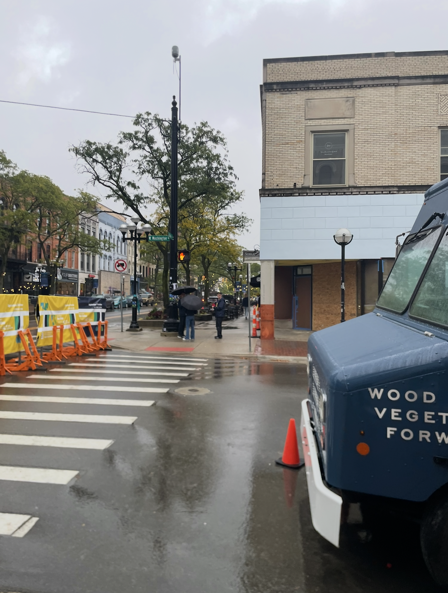

Travel
To take a break from UWaterloo, I like to travel to see my friends at other universities.
Here is my subjective ranking on the food served at those universities.
1. UCLA
Meal plan options are unreal, not to mention on-campus food trucks and the many restaurants in the area (esp Mexican).
For a college dining experience, there is no beating UCLA.

|
2. UofT*
I am biased in saying that Toronto has the best Asian food out of any western city.
The UofT campus lets you enjoy Toronto's wide array of cuisines in walking or public transit distance.
*I don't visit any friend at UofT, I just live close to campus.

|
3. UMich
The town of Ann arbor has many small, charming restaurants. I highly recommend Frita Batidos and Shalimar in particular.

|
4. Brown
Brown's dining hall has a wide selection of food, including halal and kosher options.
The restaurants and cafes in Providence also have a nice, relaxed east coast vibe.

|
5. Georgia Tech
My stay in Atlanta was short, but I always value a good Panda Express on campus when I see one.
|
6. Dalhousie
Seafood restaurants on the coast of Halifax are quite nice.
However, I found dining options around Dalhousie to take a bit of a walk.

|
World
Among other cities, I grew up between Shanghai, Beijing, and Toronto.
I'm a fan of basketball, so I hope to get good enough one day to play with locals wherever I go.
Back
|